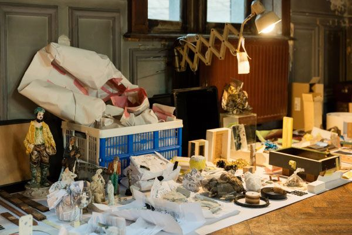
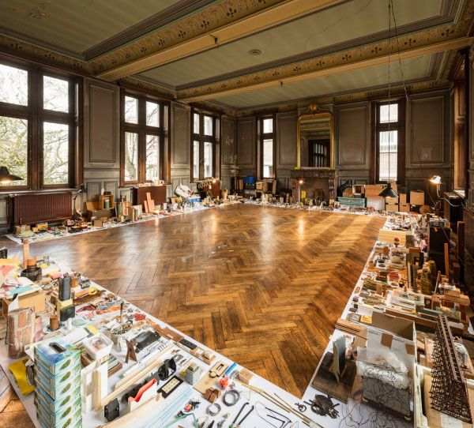
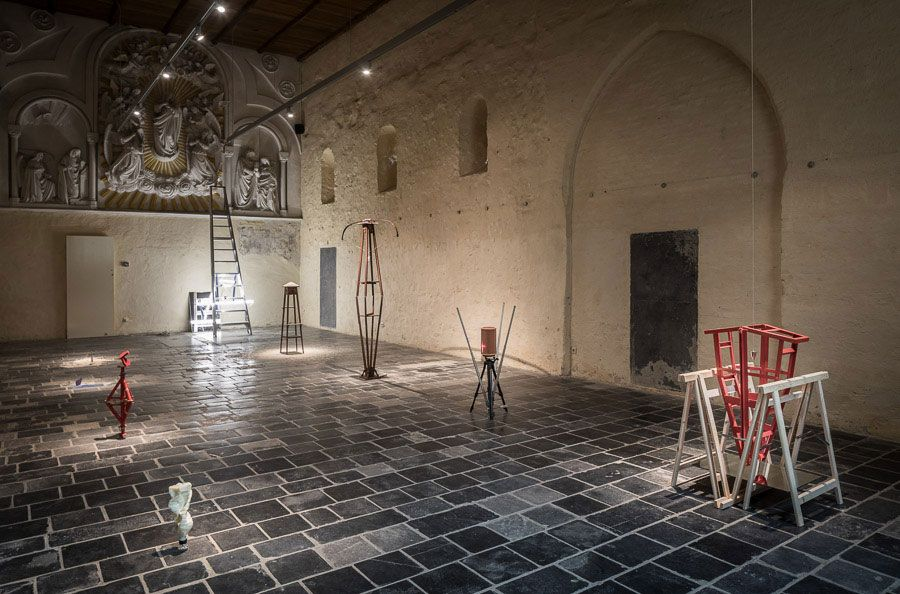

Remco eindigde zijn studie architectuur te Eindhoven in 2007. Hierna heeft hij nog een studie gedaan te Brussel en hij eindigde zijn lange weg te Hasselt waar hij nu docent is.
Hij maakt kunst op een aparte manier, spullen die hij vindt plaatst hij samen in de vorm van kunst. Ook heeft Remco een boek geschreven met verschillende citaten van andere kunstenaars, want dit vindt hij zeer belangrijk. Hij vertelt ons ook dat zijn kunst of de aanloop naar zijn kunstwerken chaos is.
Hij heeft bijvoorbeeld een tafel gemaakt met oude spullen, spullen die een verhaal vertellen. Dit zijn allemaal spullen die van zijn grootvader zijn, hij had een treinkamer die zeer belangrijk was voor Remco en zijn grootvader. Er was geen spraken van een kunstwerk maar er werd hem gevraagd om dit op te ruimen. In zijn opzicht was dit een manier om zijn jeugd af te sluiten maar eerst ging Remco zijn jeugd herontdekken. Hij ontdenkt hieruit hoe zijn grootvader het allemaal aan elkaar heeft gemaakt, met touwtjes, …
De waardevolle dingen gingen naar hem en zijn broers, … maar het hout en de ‘onbelangrijke dingen’ waren niets waard voor de andere maar hij wilde hier graag iets mee doen. Remco wil dat alles dat in die ruimte staat losse onderdelen vormen en geen geheel. Hij wilde geen tentoonstelling houden op de zolder van zijn grootvader. Daarom is hij opzoek gegaan naar een geschikte locatie, hij kon niet alles meenemen dus maakte hij een selectie. Hij had nog niets gedaan alleen het afbreken en het selecteren voor wat hem waardevol was. Maar hij moest kiezen, en hier heeft hij ervoor gekozen om 1 bestelbus maximum mee te nemen. Tot op deze moment is alles nog los en hij is begonnen met de losse stukken bij elkaar te zetten en een soort etalage ervan te maken.
Door verschillende stukken aan de wanden te hangen heeft hij gekeken wat er bij elkaar past, wanneer is het genoeg, …Hij heeft de grote dingen bij elkaar op de tafel gezet en hierdoor een nieuwe sculptuur gemaakt. De kleine objecten heeft hij aan de muur gehangen in een soort compositie tot wanneer het voor hem goed voelt. Hij vindt dat het kleinste ding dat mee aan de muur hangt een belangrijk deel is. Remco heeft ook een tentoonstelling gemaakt in de gasthuiskapel in borgloon. Het was een strakke witte box die hij perfect vond voor hedendaagse kunst.Hij heeft ook verschillende kerken daar bezocht om meer inspiratie op te doen. Remco vond het zeer frapant dat in de vormen van het kerkelijke, mensen bijvoorbeeld een kurkentrekken leggen en een suikerpot, …
Hij kwam in een ruimte waar aan de muur engelen hingen. Hier heeft hij er eerst voor gekozen om de sokkels zo te plaatsen dat de engelen naar de sokkels keken. Hij heeft het gevoel dat de kerken altijd in de hoogte gaan en daarom heeft hij als verbinden factor ook zijn kunst in de hoogte geplaatst. Op een gegeven moment heeft hij een rommellige kamer helemaal opgeruimt en de interessante dingen op een tafel gelegd. Ze hebben gekozen om al die voorwerken te gebruiken en daarmee hun tentoonstelling op te bouwen.